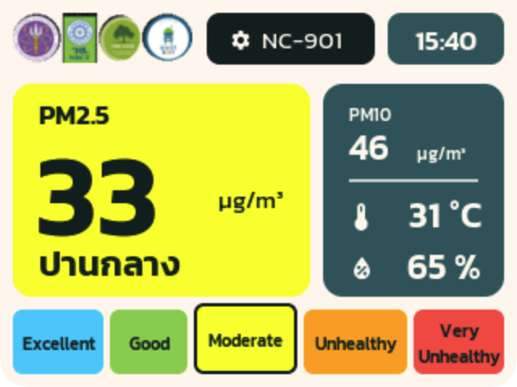

<!doctype html>
<html lang="th">
<head>
<meta charset="utf-8">
<meta name="viewport" content="width=device-width, initial-scale=1">
<title>แฟลช DustBoy NC28 · จอ 2.8" ESP32-S3</title>
<!-- One file: Tailwind (browser build), React via esm.sh + htm (no build step), ESP Web Tools -->
<link rel="preconnect" href="https://fonts.googleapis.com"><link rel="preconnect" href="https://fonts.gstatic.com" crossorigin>
<link href="https://fonts.googleapis.com/css2?family=Kanit:wght@400;500;600&family=Sarabun:wght@400;600&display=swap" rel="stylesheet">
<script src="https://cdn.jsdelivr.net/npm/@tailwindcss/browser@4"></script>
<script type="module" src="https://unpkg.com/esp-web-tools@10/dist/web/install-button.js?module"></script>
<style type="text/tailwindcss">
  @theme { --color-ink:#172326; --color-cream:#F9F6ED; --color-teal:#315E63; --color-band3:#F0CC55;
           --font-sans:"Sarabun",system-ui,sans-serif; --font-display:"Kanit",system-ui,sans-serif; }
  ::selection { background:#F0CC55; color:#172326; }
  :focus-visible { outline:2px solid #F0CC55; outline-offset:3px; border-radius:10px; }
  html { scrollbar-color:#315E63 #172326; }
  esp-web-install-button { --install-button-color:#315E63; --install-button-text:#F9F6ED; }
</style>
</head>
<body class="bg-ink text-cream antialiased">
<div id="root"></div>
<script type="module">
import React, { useEffect, useState } from "https://esm.sh/react@19";
import { createRoot } from "https://esm.sh/react-dom@19/client";
import htm from "https://esm.sh/htm@3";
const html = htm.bind(React.createElement);

const Usb = () => html`<svg aria-hidden="true" width="20" height="20" viewBox="0 0 24 24" fill="none" stroke="currentColor" stroke-width="1.8" stroke-linecap="round" stroke-linejoin="round"><path d="M12 3v14"/><path d="M8 7l4-4 4 4"/><path d="M12 13l-4-2V8"/><path d="M12 15l4-2v-2"/><circle cx="12" cy="19" r="2"/><rect x="6.5" y="6.5" width="3" height="3" rx=".5"/><circle cx="16" cy="9" r="1.5"/></svg>`;
const Gear = () => html`<svg aria-hidden="true" width="16" height="16" viewBox="0 0 24 24" fill="none" stroke="currentColor" stroke-width="1.8" stroke-linecap="round" stroke-linejoin="round"><circle cx="12" cy="12" r="3"/><path d="M19.4 15a1.7 1.7 0 0 0 .3 1.8l.1.1a2 2 0 1 1-2.8 2.8l-.1-.1a1.7 1.7 0 0 0-1.8-.3 1.7 1.7 0 0 0-1 1.5V21a2 2 0 1 1-4 0v-.1a1.7 1.7 0 0 0-1.1-1.5 1.7 1.7 0 0 0-1.8.3l-.1.1a2 2 0 1 1-2.8-2.8l.1-.1a1.7 1.7 0 0 0 .3-1.8 1.7 1.7 0 0 0-1.5-1H3a2 2 0 1 1 0-4h.1a1.7 1.7 0 0 0 1.5-1.1 1.7 1.7 0 0 0-.3-1.8l-.1-.1a2 2 0 1 1 2.8-2.8l.1.1a1.7 1.7 0 0 0 1.8.3H9a1.7 1.7 0 0 0 1-1.5V3a2 2 0 1 1 4 0v.1a1.7 1.7 0 0 0 1 1.5 1.7 1.7 0 0 0 1.8-.3l.1-.1a2 2 0 1 1 2.8 2.8l-.1.1a1.7 1.7 0 0 0-.3 1.8V9a1.7 1.7 0 0 0 1.5 1H21a2 2 0 1 1 0 4h-.1a1.7 1.7 0 0 0-1.5 1z"/></svg>`;
const Step = ({ n, children }) => html`
  <li class="flex gap-3"><span class="mt-0.5 grid size-6 shrink-0 place-items-center rounded-full bg-teal text-sm font-semibold">${n}</span><div>${children}</div></li>`;
const Code = ({ children }) => html`<code class="rounded bg-white/10 px-1.5 py-0.5 text-[0.9em]">${children}</code>`;

function App() {
  const [devices, setDevices] = useState([]);
  const [dev, setDev] = useState("");
  const [man, setMan] = useState(null);
  const [err, setErr] = useState("");
  useEffect(() => {
    fetch("fw/devices.json").then(r => { if (!r.ok) throw new Error(r.status); return r.json(); })
      .then(l => { setDevices(l); setDev(l[0] || ""); })
      .catch(() => setErr("โหลดรายชื่อเครื่องไม่ได้ — ลองรีเฟรชหน้า"));
  }, []);
  useEffect(() => { if (dev) fetch(`fw/manifest-${dev}.json`).then(r => r.json()).then(setMan).catch(() => setMan(null)); }, [dev]);
  const serialOk = "serial" in navigator;

  return html`
  <main class="mx-auto max-w-3xl px-5 py-8 leading-relaxed">
    <header class="flex flex-col items-center gap-5 sm:flex-row">
      <figure class="shrink-0 rounded-[22px] bg-[#0c1214] p-2.5 shadow-[0_18px_40px_-18px_rgba(0,0,0,.8)] ring-1 ring-white/10">
        
      </figure>
      <div>
        <h1 class="font-display text-3xl font-semibold text-balance sm:text-4xl">แฟลช DustBoy NC28 จากเบราว์เซอร์</h1>
        <p class="mt-3 max-w-[60ch] text-cream/80">เฟิร์มแวร์ฝุ่น PM2.5 สำหรับบอร์ดจอ 2.8" ESP32-S3 (LCDWIKI ES3C28P) —
        เสียบสาย USB แล้วกดติดตั้งได้เลย ไม่ต้องลงโปรแกรม</p>
      </div>
    </header>

    <section class="mt-8 rounded-2xl bg-white/5 p-5 ring-1 ring-white/10">
      <h2 class="font-display text-lg font-medium text-band3">1 · เลือกเครื่อง แล้วติดตั้ง</h2>
      <div class="mt-3 flex flex-wrap items-center gap-3">
        <select value=${dev} onChange=${e => setDev(e.target.value)}
          aria-label="เลือกเครื่อง" class="rounded-lg bg-ink px-3 py-2 font-display ring-1 ring-teal">
          ${devices.map(d => html`<option key=${d} value=${d}>${d.toUpperCase()}</option>`)}
        </select>
        ${man && html`<span class="text-sm tabular-nums text-cream/65">${man.version}</span>`}
        ${!devices.length && !err && html`<span class="text-sm text-cream/65">กำลังโหลด…</span>`}
      </div>
      <div class="mt-4">
        ${err && html`<p role="alert" class="rounded-lg bg-[#EC7070]/20 px-3 py-2">${err}</p>`}
        ${!serialOk && html`<p role="alert" class="rounded-lg bg-[#EC7070]/20 px-3 py-2">เบราว์เซอร์นี้ไม่มี Web Serial — ใช้ Chrome หรือ Edge บนคอมพิวเตอร์</p>`}
        ${serialOk && dev && html`
          <esp-web-install-button manifest=${`fw/manifest-${dev}.json`}>
            <button slot="activate" class="inline-flex items-center gap-2.5 rounded-xl bg-teal px-5 py-3 font-display text-lg font-medium transition hover:bg-[#3a6d73] active:translate-y-px"><${Usb} /> เชื่อมต่อและติดตั้ง</button>
            <span slot="not-allowed">ต้องเปิดผ่าน https หรือ http://127.0.0.1</span>
          </esp-web-install-button>`}
      </div>
      <p class="mt-3 text-sm text-cream/60">ติ๊ก <i>Erase device</i> เพื่อล้างเครื่องทั้งหมด (รวม Wi-Fi ที่บันทึกไว้)</p>
    </section>

    <section class="mt-6 grid gap-6 sm:grid-cols-2">
      <div class="rounded-2xl bg-white/5 p-5 ring-1 ring-white/10">
        <h2 class="font-display text-lg font-medium text-band3">ต้องใช้อะไร</h2>
        <ul class="mt-2 list-disc space-y-1 pl-5 text-cream/90">
          <li>Chrome / Edge บนคอม</li>
          <li>สาย USB-C ที่ส่งข้อมูลได้ (พอร์ต <${Code}>USB JTAG/serial debug unit<//>)</li>
          <li>หาพอร์ตไม่เจอ: กด <b>BOOT</b> ค้าง เสียบสาย แล้วปล่อย</li>
        </ul>
      </div>
      <div class="rounded-2xl bg-white/5 p-5 ring-1 ring-white/10">
        <h2 class="font-display text-lg font-medium text-band3">2 · หลังแฟลช</h2>
        <ol class="mt-2 space-y-2">
          <${Step} n="1">แคปซูลมุมขวาบนนับถอยหลังระหว่างรอ Wi-Fi<//>
          <${Step} n="2">แตะ <b class="inline-flex items-center gap-1"><${Gear} /> NC-xxx</b> → เลือก Wi-Fi → ใส่รหัส → <b>Join</b><//>
          <${Step} n="3">หมดเวลาโดยไม่ได้ตั้ง: เปิด hotspot แคปซูลกะพริบ <b>AP</b><//>
        </ol>
      </div>
    </section>

    <section class="mt-6 rounded-2xl bg-band3/15 p-5 ring-1 ring-band3/40">
      <h2 class="font-display text-lg font-medium text-band3">อิมเมจนี้คือ “bootstrap”</h2>
      <p class="mt-2 text-cream/90">อิมเมจสาธารณะไม่มีรหัสใด ๆ ของระบบ (MQTT, OTA, API) — หน้าจอ Wi-Fi และการวัดทำงานครบ
      แต่ยังไม่ส่งข้อมูลขึ้นเซิร์ฟเวอร์ เมื่อเครื่องต่อ Wi-Fi แล้ว ทีม DustBoy จะติดตั้งเฟิร์มแวร์ตัวจริงให้ผ่าน OTA
      (จอจะขึ้นแถบ “Updating firmware…”)</p>
    </section>

    <footer class="mt-8 text-sm text-cream/50">
      ESPHome 2026.8 · เวอร์ชันแบบ CalVer จากเวลาบิลด์ <${Code}>vYY.M.D-HHMM<//> ดูบนจอได้ที่หน้าตั้งค่า
    </footer>
  </main>`;
}
createRoot(document.getElementById("root")).render(html`<${App} />`);
</script>
</body>
</html>
